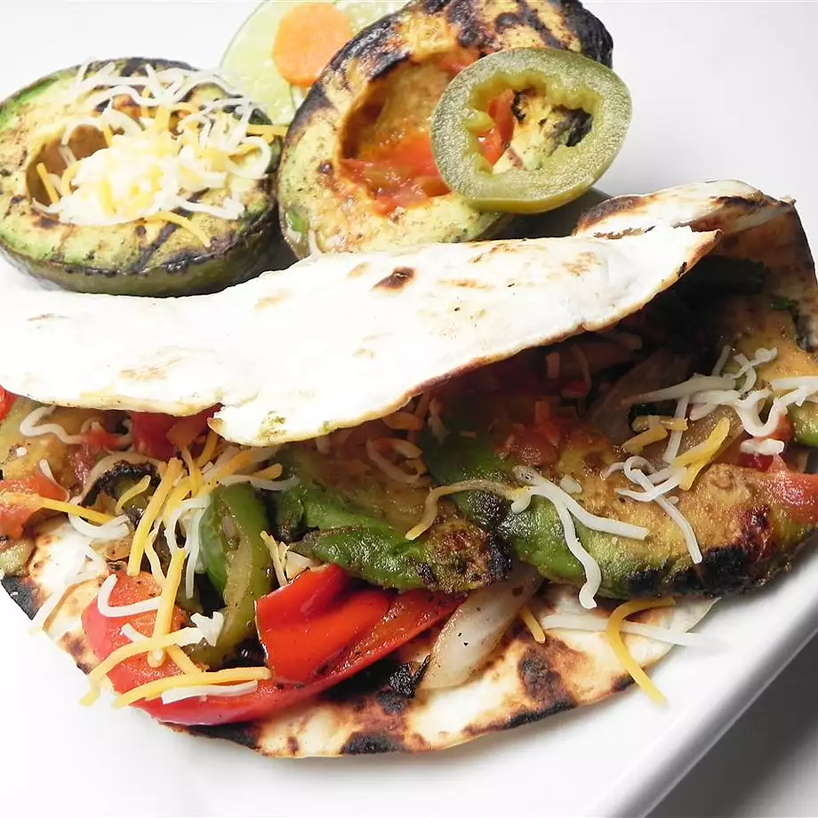

Smokey Avocado Fajitas

Delicious looking Fajita
As a lover of Mexican food who's recently gone meatless,
I decided to experiment with an idea for fajitas that would
be as close to the real thing as possible without
including meat. These turned out to be better than almost
any traditional fajitas I've ever had. Even my meat-loving
25-year-old son loved them, and wants more!
Authentic Southwestern fajita flavor with a smoky touch.
Very easy to make. Garnish with sour cream, salsa, and
grated cheese as desired.
Ingredients
- 1⅓ cups water
- 3 tablespoons olive oil
- 2 tablespoons liquid smoke flavoring (Optional)
- 2 (1 ounce) packages fajita seasoning
- 4 large avocados - peeled, pitted, and sliced into 1/2-inch wedges
- 4 large bell peppers - stemmed, seeded, and sliced into 1/2-inch wedges
- 1 extra large onion, sliced into rings and rings separated
- 12 (6 inch) flour tortillas
- Whisk water, oil, liquid smoke, and fajita seasoning together in a bowl and pour into a resealable plastic bag. Add avocados, bell pepper, and onion, coat with the marinade, squeeze out excess air, and seal the bag. Marinate in the refrigerator for 1 hour to overnight; turn occasionally.
- Preheat oven to 225 degrees F (110 degrees C). Stack tortillas; wrap in aluminum foil. Place in oven to warm.
- Preheat oven to 225 degrees F (110 degrees C). Stack tortillas; wrap in aluminum foil. Place in oven to warm.
- Place onions and peppers, in 1 layer, onto grill using tongs; cook until tender, 5 to 10 minutes, turning as needed. Transfer to an oven-proof pan; cover with aluminum foil. Place in the preheated oven to keep warm.
- Place avocados in 1 layer onto grill; cook, turning once, until browned, about 5 minutes.
- Fill tortillas with avocado and onion mixture; roll or fold tortilla around filling.
Back to Home